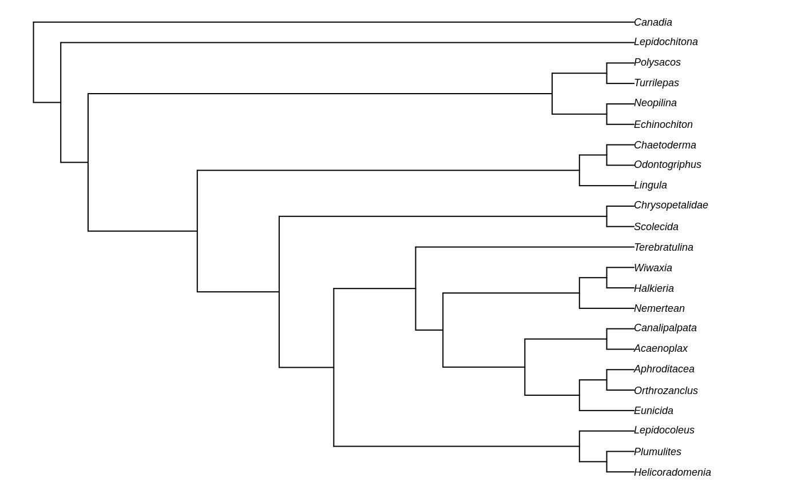
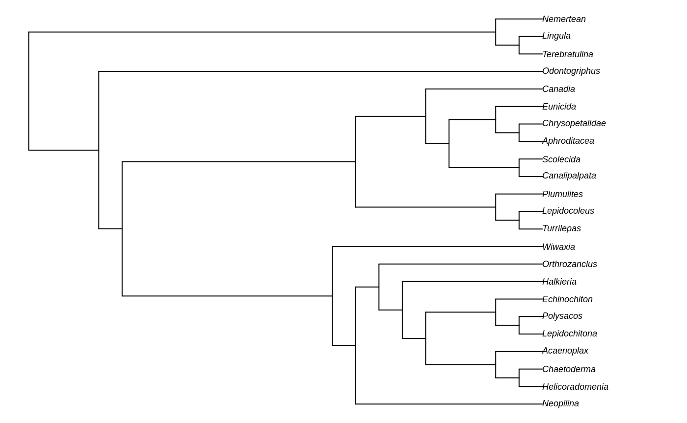
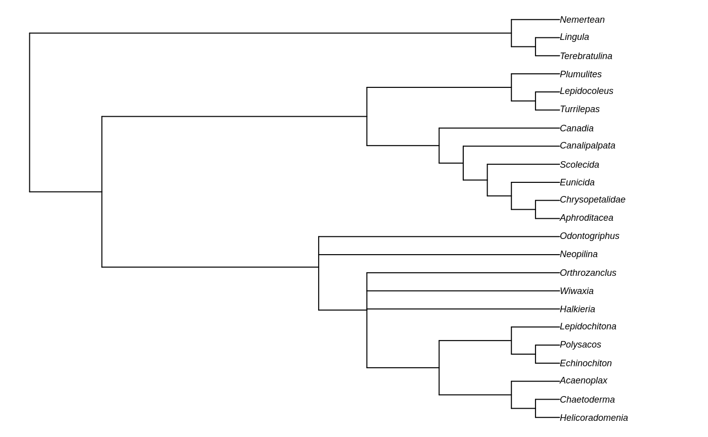
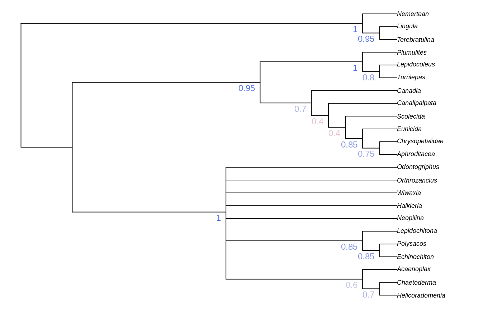

vignettes/inapplicable.Rmd
inapplicable.RmdTreeSearch is an R package that allows, among other things, parsimony search on morphological datasets that contain inapplicable data, following the algorithm proposed by Brazeau, Guillerme and Smith (2019).
In brief, this algorithm modifies the Fitch algorithm to count the total number of homoplasious events on a tree.
A companion vignette gives details on installing the package and getting up and running.
Once installed, load the TreeSearch package into R using
library('TreeSearch')
Here’s an example of using the package to conduct tree search. You can load your own dataset, but for now, we’ll use the Vinther et al. (2008) dataset that comes bundled with the package.
This dataset is small enough that it runs reasonably quickly, but its phylogenetic signal is obscure enough that it can require Ratchet searches to escape from local optima.
my.data <- TreeSearch::inapplicable.datasets[['Vinther2008']] my.phyDat <- phangorn::phyDat(my.data, type = 'USER', levels = c(0:9, '-'))
# Set a random seed so that random functions in this document are reproducible RNGversion("3.5.0") # Until we can require R3.6.0 set.seed(0)
We can generate a random tree and calculate its parsimony score thus:
random.tree <- TreeTools::RandomTree(my.phyDat) par(mar = rep(0.25, 4), cex = 0.75) # make plot easier to read plot(random.tree)

Fitch(random.tree, my.phyDat)
## [1] 189We might save some wasted time in tree search if we can start with a tree that’s a little closer to optimal: perhaps a neighbour-joining tree.
nj.tree <- TreeTools::NJTree(my.phyDat) par(mar = rep(0.25, 4), cex = 0.75) # make plot easier to read plot(nj.tree)
Fitch(nj.tree, my.phyDat)
## [1] 85With the Vinther et al. (2008) dataset, nemerteans and brachiopods form an natural outgroup to the other taxa. If we wish, we can constrain this outgroup and avoid making tree rearrangements that would mix ingroup and outgroup taxa. This will accelerate tree search, but it’s worth thinking carefully whether you can be perfectly confident that the ingroup and outgroup are mutually monophyletic.
To constrain an outgroup, we first need to make the outgroup and ingroup monophyletic on our tree:
outgroup <- c('Nemertean', 'Lingula', 'Terebratulina') rooted.tree <- TreeTools::EnforceOutgroup(nj.tree, outgroup) par(mar = rep(0.25, 4), cex = 0.75) # make plot easier to read plot(rooted.tree)

Now let’s see whether a few nearest-neighbour interchanges can find us a better tree score. This tends to be the quickest search to run, if not the most exhaustive. Using RootedNNISwap instead of NNISwap stops taxa from moving from one side of the root to another, which we need to do if we’re going to enforce our outgroup constraint. Even if we are using a single-taxon outgroup, using RootedNNISwap retains the position of the root, which makes tree comparison and interpretation easier later on.
better.tree <- TreeSearch(tree = rooted.tree, dataset = my.phyDat, EdgeSwapper = RootedNNISwap, verbosity = 3)
## - Performing tree search. Initial score: 85## - Iteration 1 - Best score 85 hit 1 times.## - Iteration 3 - Best score 85 hit 2 times.## - Iteration 4 - Best score 85 hit 3 times.## - Iteration 5 - Best score 85 hit 4 times.## - Iteration 8 - Best score 85 hit 5 times.## - Iteration 10 - Best score 85 hit 6 times.## - Iteration 11 - Best score 85 hit 7 times.## - Iteration 13 - Best score 85 hit 8 times.## - Iteration 14 - Best score 85 hit 9 times.## - Iteration 16 - Best score 85 hit 10 times.## * Iteration 18 - New best score 84 found on 1 trees.## - Iteration 20 - Best score 84 hit 2 times.## - Iteration 23 - Best score 84 hit 3 times.## - Iteration 24 - Best score 84 hit 4 times.## - Iteration 25 - Best score 84 hit 5 times.## * Iteration 27 - New best score 82 found on 1 trees.## - Iteration 29 - Best score 82 hit 2 times.## - Iteration 34 - Best score 82 hit 3 times.## - Iteration 37 - Best score 82 hit 4 times.## * Iteration 42 - New best score 81 found on 1 trees.## * Iteration 45 - New best score 80 found on 1 trees.## - Iteration 59 - Best score 80 hit 2 times.## - Iteration 65 - Best score 80 hit 3 times.## - Iteration 67 - Best score 80 hit 4 times.## - Iteration 68 - Best score 80 hit 5 times.## - Iteration 71 - Best score 80 hit 6 times.## - Iteration 90 - Best score 80 hit 7 times.## - Iteration 93 - Best score 80 hit 8 times.## - Final score 80 found 8 times after 100 rearrangements.This score is better than the 85 of the original neighbour-joining tree, but is this the best we can do?
Using NNI helps to explore the region of treespace close to the local optimum, but SPR and TBR rearrangements are better at escaping local optima, and find better trees further away in tree space. Using more hits (maxHits) and more iterations (maxIter) also means we’ll move closer to an optimal tree.
better.tree <- TreeSearch(better.tree, my.phyDat, maxHits = 8, maxIter = 10000, EdgeSwapper=RootedSPRSwap, verbosity = 2)
## - Performing tree search. Initial score: 80## - Terminating search; hit best score 8 times.## - Final score 80 found 8 times after 360 rearrangements.better.tree <- TreeSearch(better.tree, my.phyDat, maxHits = 20, maxIter = 40000, EdgeSwapper=RootedTBRSwap, verbosity = 2)
## - Performing tree search. Initial score: 80## - Terminating search; hit best score 20 times.## - Final score 80 found 20 times after 782 rearrangements.That score’s looking better, but these are only quick searches, and we could be caught in a local optimum. A more comprehensive search of tree space can be accomplished using the parsimony ratchet (Nixon, 1999). It might take a couple of minutes to run with the default parameters.
To be confident that you have found a globally optimum tree, it’s worth running a ratchet with verbosity = 2 and following the search, increasing ratchIter and other search parameters until you are confident that independent ratchet iterations are consistently converging on the optimum score.
best.tree <- Ratchet(better.tree, my.phyDat, verbosity=0, ratchIter=5, swappers=list(RootedTBRSwap, RootedSPRSwap, RootedNNISwap)) attr(best.tree, 'score') # Each tree is labelled with its score during tree search
## [1] 79The best tree for this dataset has a score of 79. This relatively quick Ratchet search always seems to find a tree with this score from this dataset. (Larger datasets will probably need a more exhaustive search.)
Let’s take a look at the one it’s found on this occasion:
This is, of course, just one most parsimonious tree; with this dataset, there are many.
One way to make a strict consensus of multiple optimal trees is to collect a number of trees from independent Ratchet iterations.
For each Ratchet iteration, we’ll conduct a TBR search to scan tree space, then an NNI search to hone in on the local optimum.
Note that it’s especially important to retain the position of the root here: a single topology, if rooted in different places, can lead to an unresolved consensus.
some.optimal.trees <- MultiRatchet(best.tree, nSearch = 20, my.phyDat, swappers = list(RootedTBRSwap, RootedNNISwap))
## Found 11 unique trees from 20 searches.If ten independent runs ended up at a number of different trees, there may be many more optimal trees out there to be found; perhaps we could repeat MultiRatchet with nSearch = 250 for a more exhaustive sampling of tree space. That would take a while though; for now, let’s check out our consensus tree:
par(mar = rep(0.25, 4), cex = 0.75) # make plot easier to read strict.consensus <- ape::consensus(some.optimal.trees) plot(strict.consensus)

We might prefer a majority-rule consensus tree:
par(mar=rep(0.25, 4), cex=0.75) # make plot easier to read majority.consensus <- ape::consensus(some.optimal.trees, p = 0.5) plot(majority.consensus)
Clade support can be generated using Jackknife resampling:
jack.trees <- Jackknife(best.tree, my.phyDat, EdgeSwapper = RootedTBRSwap, jackIter = 20, verbosity = 0) par(mar = rep(0.25, 4), cex = 0.75) # make plot easier to read JackLabels(strict.consensus, jack.trees) -> XX

Equal weights produces trees that are less accurate and less precise than implied weights (Smith, 2019); equally weighted analysis should never be conducted without also considering the results of implied weights (Goloboff, 1997), ideally under a range of concavity constants (cf. Smith & Ortega-Hernández, 2014).
The simplest way to conduct an implied weights search is to use the functions
IWTreeSearch IWRatchet IWMultiRatchet
which operate in the same fashion as their equally-weighted counterparts, with the option of specifying a concavity constant (k) using the parameter concavity=k (default = 10). Note that the default value of 10 is somewhat higher than the default of 3 in TNT; this low default probably gives poorer results in many settings (Smith, 2019).
Brazeau, M. D., Guillerme, T., & Smith, M. R. (2019). An algorithm for morphological phylogenetic analysis with inapplicable data. Systematic Biology, 68(4), 619–631. doi:10.1093/sysbio/syy083
Goloboff, P. A. (1997). Self-weighted optimization: tree searches and character state reconstructions under implied transformation costs. Cladistics, 13(3), 225–245. Retrieved from http://dx.doi.org/10.1111/j.1096-0031.1997.tb00317.x
Nixon, K. C. (1999). The Parsimony Ratchet, a new method for rapid parsimony analysis. Cladistics, 15(4), 407–414. doi:10.1111/j.1096-0031.1999.tb00277.x
Smith, M. R. (2019). Bayesian and parsimony approaches reconstruct informative trees from simulated morphological datasets. Biology Letters, 15(2), 20180632. doi:10.1098/rsbl.2018.0632
Smith, M. R., & Ortega-Hernández, J. (2014). Hallucigenia’s onychophoran-like claws and the case for Tactopoda. Nature, 514(7522), 363–366. doi:10.1038/nature13576
Vinther, J., Van Roy, P., & Briggs, D. E. G. (2008). Machaeridians are Palaeozoic armoured annelids. Nature, 451(7175), 185–188. doi:10.1038/nature06474